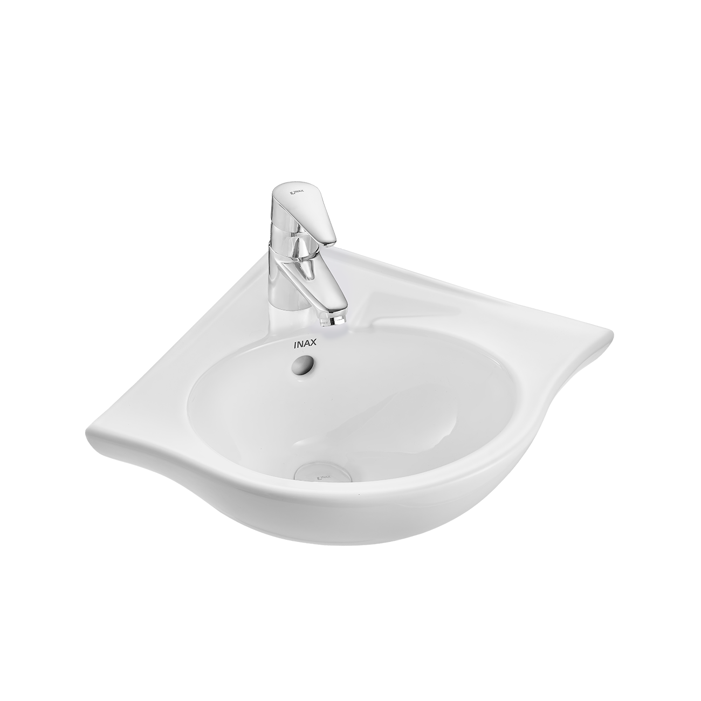
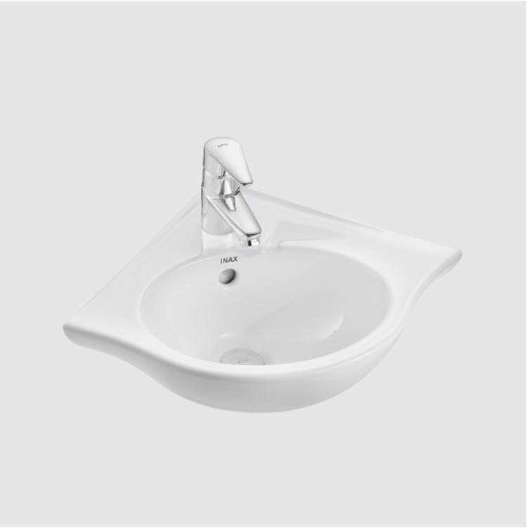
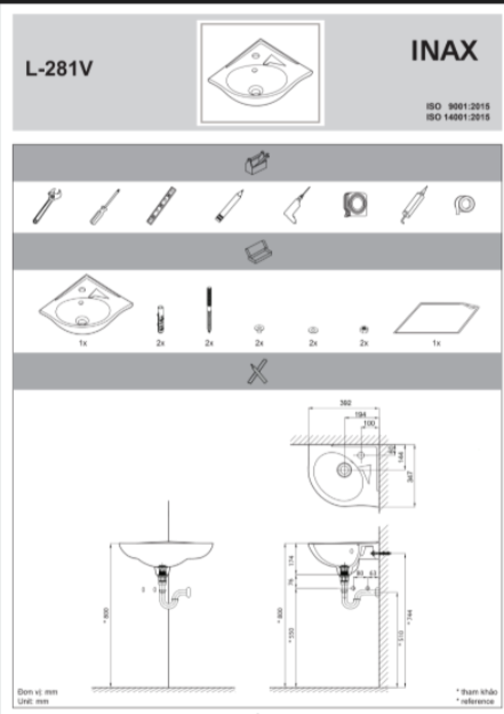
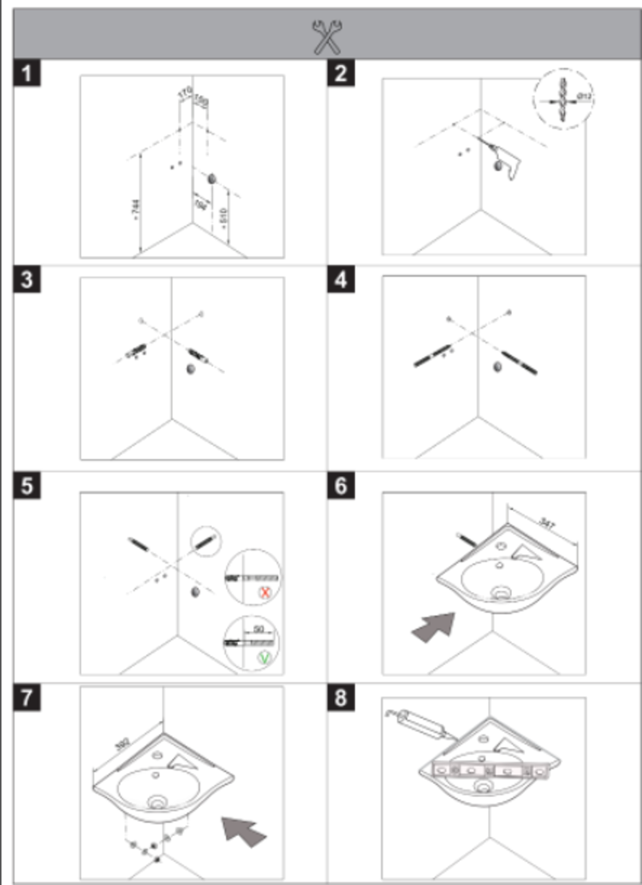
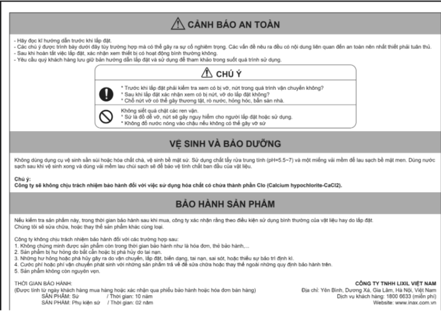

Chậu rửa góc L-281V của INAX là giải pháp hoàn hảo để tối ưu hóa không gian phòng tắm, đặc biệt là những nơi có diện tích khiêm tốn. Với kích thước 392 x 175 x 347mm (Rộng x Cao x Sâu), sản phẩm được thiết kế để tận dụng hiệu quả các góc hẹp, mang lại vẻ đẹp sang trọng, hiện đại cho không gian mà vẫn đảm bảo tiện nghi cho người dùng.Đặc điểm nổi bật của chậu rửa góc L-281VChậu rửa góc L-281V được chế tác từ sứ cao cấp và phủ lớp men sứ bền bỉ chuẩn Nhật, đảm bảo bề mặt luôn trơn bóng và vệ sinh dễ dàng.Tông màu trắng mang đến vẻ ngoài tinh tế, hiện đại và sang trọng.Lòng chậu sâu và rộng, hạn chế tối đa tình trạng bắn nước ra ngoài khi sử dụng.Thành xung quanh chậu rửa góc L281-V được thiết kế rộng rãi, tạo không gian lý tưởng để đặt các vật dụng cá nhân gọn gàng hơn.Lỗ xả tràn thông minh, ngăn nước tràn ra ngoài trong trường hợp người dùng quên khóa vòi.Để hoàn thiện không gian phòng tắm/phòng vệ sinh, khách hàng có thể kết hợp chậu rửa góc L-281V với vòi lavabo nóng lạnh INAX LFV-1112S hoặc vòi chậu rửa lạnh INAX LFV-21S.INAX cam kết chất lượng sản phẩm với thời gian bảo hành lên đến 10 năm, tính từ ngày mua hàng, xác nhận qua phiếu bảo hành hoặc hóa đơn bán hàng.Hướng dẫn lắp đặt chậu rửa góc L-281VBước 1: Chuẩn bị các dụng cụ như hình vẽ và đo đạc kích thước, chiều cao phù hợp trước khi lắp đặtBước 2: Tiến hành lắp đặt theo các bước chỉ dẫn như trên hìnhHướng dẫn sử dụng chậu rửa góc L-281VCác lưu ý cần nhớ khi lắp đặt, sử dụng, vệ sinh và bảo dưỡng chậu góc INAX L-281VThông số kỹ thuậtChất liệuSứ cao cấp với men sứ bền bỉ chuẩn Nhật, trơn bóng, dễ dàng vệ sinhLoạiTreo tường gócKích thước392 x 175 x 347 (mm) (Rộng x Cao x Sâu)Thương hiệuINAXThiết kế- Nhỏ gọn, tận dụng tối ưu không gian góc hẹp trong phòng tắm - Kiểu dáng trang nhã, lỗ xả tràn tiện lợi - Lỗ xả tràn ngăn nước tràn ra ngoài khi quên khóa vòi - Thành xung quanh chậu rửa rộng, tận dụng để các vật dụng cá nhân - Lòng bồn sâu và rộng, hạn chế tình trạng bắn nước ra ngoàiMàu sắcTrắngKhác- Thời gian bảo hành: 10 năm (tính từ ngày khách hàng mua hàng hoặc xác nhận qua phiếu bảo hành hoặc hóa đơn bán hàng) - Gợi ý sản phẩm đi kèm: vòi lavabo nóng lạnh INAX LFV-1112S, vòi chậu rửa lạnh INAX LFV-21S - Hotline tư vấn và bảo hành: 18006633
Chậu rửa góc L-281V
Chậu rửa thương hiệu INAX.
Đã cập nhật danh sách yêu thích.
DANH MỤC: Chậu rửa
MÃ SẢN PHẨM: L-281V
DEPTH: 380mm
HEIGHT: 173mm
WIDTH: 380mm
Chậu rửa góc L-281V của INAX là giải pháp hoàn hảo để tối ưu hóa không gian phòng tắm, đặc biệt là những nơi có diện tích khiêm tốn. Với kích thước 392 x 175 x 347mm (Rộng x Cao x Sâu), sản phẩm được thiết kế để tận dụng hiệu quả các góc hẹp, mang lại vẻ đẹp sang trọng, hiện đại cho không gian mà vẫn đảm bảo tiện nghi cho người dùng.Đặc điểm nổi bật của chậu rửa góc L-281VChậu rửa góc L-281V được chế tác từ sứ cao cấp và phủ lớp men sứ bền bỉ chuẩn Nhật, đảm bảo bề mặt luôn trơn bóng và vệ sinh dễ dàng.Tông màu trắng mang đến vẻ ngoài tinh tế, hiện đại và sang trọng.Lòng chậu sâu và rộng, hạn chế tối đa tình trạng bắn nước ra ngoài khi sử dụng.Thành xung quanh chậu rửa góc L281-V được thiết kế rộng rãi, tạo không gian lý tưởng để đặt các vật dụng cá nhân gọn gàng hơn.Lỗ xả tràn thông minh, ngăn nước tràn ra ngoài trong trường hợp người dùng quên khóa vòi.Để hoàn thiện không gian phòng tắm/phòng vệ sinh, khách hàng có thể kết hợp chậu rửa góc L-281V với vòi lavabo nóng lạnh INAX LFV-1112S hoặc vòi chậu rửa lạnh INAX LFV-21S.INAX cam kết chất lượng sản phẩm với thời gian bảo hành lên đến 10 năm, tính từ ngày mua hàng, xác nhận qua phiếu bảo hành hoặc hóa đơn bán hàng.Hướng dẫn lắp đặt chậu rửa góc L-281VBước 1: Chuẩn bị các dụng cụ như hình vẽ và đo đạc kích thước, chiều cao phù hợp trước khi lắp đặtBước 2: Tiến hành lắp đặt theo các bước chỉ dẫn như trên hìnhHướng dẫn sử dụng chậu rửa góc L-281VCác lưu ý cần nhớ khi lắp đặt, sử dụng, vệ sinh và bảo dưỡng chậu góc INAX L-281VThông số kỹ thuậtChất liệuSứ cao cấp với men sứ bền bỉ chuẩn Nhật, trơn bóng, dễ dàng vệ sinhLoạiTreo tường gócKích thước392 x 175 x 347 (mm) (Rộng x Cao x Sâu)Thương hiệuINAXThiết kế- Nhỏ gọn, tận dụng tối ưu không gian góc hẹp trong phòng tắm - Kiểu dáng trang nhã, lỗ xả tràn tiện lợi - Lỗ xả tràn ngăn nước tràn ra ngoài khi quên khóa vòi - Thành xung quanh chậu rửa rộng, tận dụng để các vật dụng cá nhân - Lòng bồn sâu và rộng, hạn chế tình trạng bắn nước ra ngoàiMàu sắcTrắngKhác- Thời gian bảo hành: 10 năm (tính từ ngày khách hàng mua hàng hoặc xác nhận qua phiếu bảo hành hoặc hóa đơn bán hàng) - Gợi ý sản phẩm đi kèm: vòi lavabo nóng lạnh INAX LFV-1112S, vòi chậu rửa lạnh INAX LFV-21S - Hotline tư vấn và bảo hành: 18006633
DANH MỤC: Chậu rửa
MÃ SẢN PHẨM: L-281V
DEPTH: 380mm
HEIGHT: 173mm
WIDTH: 380mm